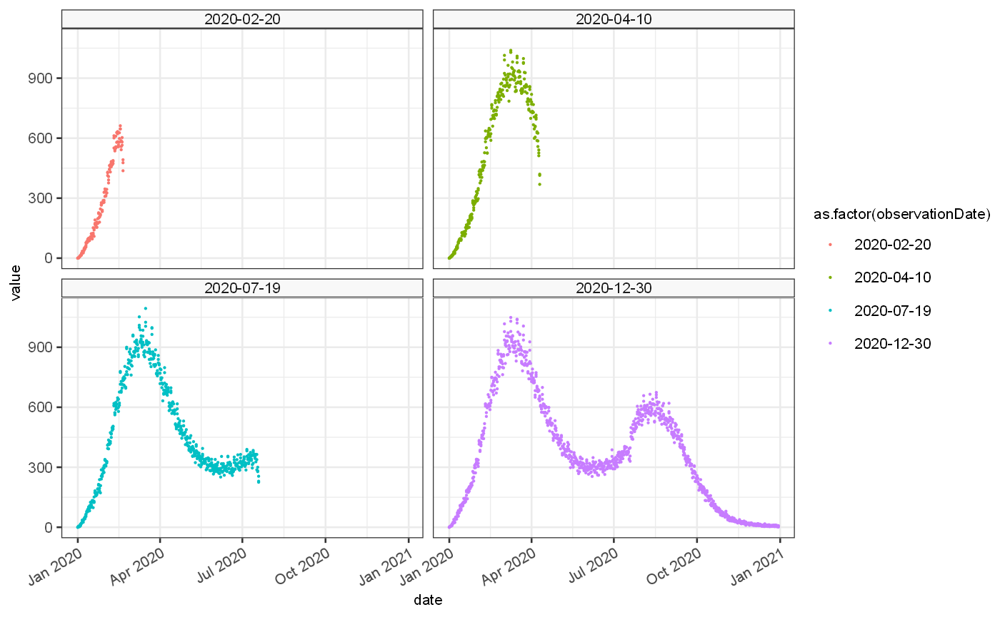

generating-synthetic-datasets.RmdThe synthetic data set is generated from a known set of growth rates. Firstly we define a time series of growth rate values using a cubic spline and a set of given points. This set of rates could also be provided as a full time series.
growth = jepidemic::generateGrowthRate("test 1",breaks = c(0,40,80,200,300,364), rates=c(0,0.03,-0.01,0.01,-0.05,0)) ggplot()+ geom_line(data = growth$ts, mapping = aes(x=date, y=Growth.actual), colour="red")+ geom_point(data = growth$events, mapping = aes(x=`Start date`, y=rates), colour="red")
No growth will be seen unless some cases are imported, to seed the initial epidemic:
Given the imports and the growth rate we can calculate a number of cases we expect to see at any given time:
pois = imported %>% jepidemic::addPoissonRate() ggplot() + geom_bar(data=pois$ts, mapping=aes(x=date,y=import), stat="identity")+ geom_line(data=pois$ts, mapping=aes(x=date,y=Est.actual), colour="red")
With this estimate of the underlying incidence of infection we can adjust for various biases, firstly for drop in observed cases at weekends and subsequent increase on a Monday,and secondly for any long term trends in observed cases as a acquisition bias.
weekend = pois %>% jepidemic::addObservedRate(observedFractionExpr = approx(x = c(0,40,n()-1), y=c(0.1,0.9,1), xout = 0:(n()-1))$y, weekendEffect = 0.05) ggplot() + geom_bar(data=weekend$ts, mapping=aes(x=date,y=import), stat="identity")+ geom_line(data=weekend$ts, mapping=aes(x=date,y=Est.actual), colour="red")+ geom_line(data=weekend$ts, mapping=aes(x=date,y=Est.observed), colour="blue")
Secondly and with the expected observed poisson rate we can generate a set of bootstrapped time series of cases as they woudl have been observed at various points in time. These are influenced by reporting delay which can cause a drop off in cases at the end of the time series, and lets us investigate how our accuracy would have changed over time.
#devtools::load_all() vignetteDataset = weekend %>% jepidemic::addBootstrappedObservations(bootstraps = 3,delayMean = 1.5,delaySd = 2.5,lastObservation = c(50,100,200,364)) ggplot() + #geom_bar(data=weekend$ts, mapping=aes(x=date,y=import), stat="identity")+ #geom_line(data=weekend$ts, mapping=aes(x=date,y=Est.actual), colour="red")+ #geom_line(data=weekend$ts, mapping=aes(x=date,y=Est.observed), colour="blue")+ geom_point(data=vignetteDataset$ts, mapping=aes(x=date,y=value, colour=as.factor(observationDate), group=bootstrap), size=0.1)+ facet_wrap(vars(observationDate))

usethis::use_data(vignetteDataset,overwrite = TRUE)
## ✓ Setting active project to '/media/data/Git/jepidemic/r-library'## ✓ Saving 'vignetteDataset' to 'data/vignetteDataset.rda'## • Document your data (see 'https://r-pkgs.org/data.html')
# J$Serialiser$serialiseDataframe(lagAnalysisDataset$ts,here::here("../src/main/resources/vignetteDataframe.ser"))The final synthetic time series have 3 biases, firstly a weekend effect, secondly a potentially time dependent acquisition bias and thirdly a reporting delay distribution. Each simulation will have a number of bootstraps allowing us to investigate the impact on randomness of our estimates, and a number of observation dates allowing reporting delay bias.
The proportions of these biases for each observation date are shown below:
ggplot()+ geom_line(data=vignetteDataset$ts, aes(x=date,y=Fraction.observed,colour="observed"))+ geom_line(data=vignetteDataset$ts, aes(x=date,y=Fraction.weekend,colour="weekend"))+ geom_line(data=vignetteDataset$ts, aes(x=date,y=Fraction.available,colour="available"))+ facet_wrap(vars(observationDate))+ylab("fraction")
The synthetic time series generated in this manner can be used to test estimators of growth rate and R_t, against theoretical values. For validation of accuracy of predictions we use 2 synthetic data sets, firstly a period regular function with zero randomness to assess the lag in estimation under ideal estimation conditions:
lagAnalysisDataset = jepidemic::periodicGrowthRate("lag test",smooth=FALSE) %>% jepidemic::addImportations(rate = 1000) %>% jepidemic::addPoissonRate() lagAnalysisDataset$ts = lagAnalysisDataset$ts %>% mutate( value = Est.actual ) usethis::use_data(lagAnalysisDataset,overwrite = TRUE)
## ✓ Saving 'lagAnalysisDataset' to 'data/lagAnalysisDataset.rda'## • Document your data (see 'https://r-pkgs.org/data.html')# J$Serialiser$serialiseDataframe(lagAnalysisDataset$ts,here::here("../src/main/resources/lagAnalysisDataframe.ser")) p1 = ggplot()+ geom_line(data = lagAnalysisDataset$ts, mapping = aes(x=date, y=Growth.actual), colour="red")+ geom_point(data = lagAnalysisDataset$events, mapping = aes(x=`Start date`, y=rates), colour="red")+ ylab("growth rate") p2 = ggplot() + geom_bar(data=lagAnalysisDataset$ts, mapping=aes(x=date,y=import), stat="identity")+ geom_point(data = lagAnalysisDataset$ts, mapping = aes(x=date, y=value), colour="black",size=0.3)+ geom_line(data=lagAnalysisDataset$ts, mapping=aes(x=date,y=Est.actual), colour="red")+ ylab("cases") p1+p2+patchwork::plot_layout(ncol=1)
Secondly a standard set of estimates is generated based on 2 growth rate data sets, one based on a continuous function and one based on a step function:
# control points control = tibble( smooth = c(TRUE,FALSE), control = list( tibble( # SMOOTH rates = c(0.03, -0.025, 0.005, 0.04, -0.04, -0.07), breaks = c(0, 45, 96, 197, 254, 364) ), tibble( # STEP rates = c(0.035, -0.03, 0.025, -0.015, 0.01, -0.005, 0), breaks = c(0, 30, 130, 200, 250, 300, 364) ) ) ) # kept set.seed(101) options = tibble(weekendEffect = c(0,0.03,0.1)) %>% inner_join(control, by = character()) %>% inner_join(tibble(seed = c(100,10000)), by=character()) %>% mutate( smoothLabel = ifelse(smooth,"spline","step") %>% ordered(levels=c("spline","step")), weekendLabel = case_when( weekendEffect == 0 ~ "no weekly variation", weekendEffect == 0.03 ~ "\u00B1 3% variation", weekendEffect == 0.1 ~ "\u00B1 10% variation", ) %>% ordered(levels=c("no weekly variation","\u00B1 3% variation","\u00B1 10% variation")), seedLabel = case_when( seed == 100 ~ "low incidence", seed == 10000 ~ "high incidence" ) %>% ordered(levels=c("low incidence","high incidence")), ) # Combine configuration with generated dataset validationDataset = options %>% group_by_all() %>% group_modify(function(d,g,...) { config = g tmp = getGrowthRateBasedDataset(weekendEffect = config$weekendEffect, smooth= config$smooth, seed = config$seed, breaks = config$control[[1]]$breaks, rates = c(0,config$control[[1]]$rates), bootstraps=10) tmp2 = tibble( ts = list(tmp$ts), events = list(tmp$events), infectivityProfile = list(tmp$infectivityProfile) ) return(tmp2) })
## Warning in regularize.values(x, y, ties, missing(ties)): collapsing to unique
## 'x' values
## Warning in regularize.values(x, y, ties, missing(ties)): collapsing to unique
## 'x' values
## Warning in regularize.values(x, y, ties, missing(ties)): collapsing to unique
## 'x' values
## Warning in regularize.values(x, y, ties, missing(ties)): collapsing to unique
## 'x' values
## Warning in regularize.values(x, y, ties, missing(ties)): collapsing to unique
## 'x' values
## Warning in regularize.values(x, y, ties, missing(ties)): collapsing to unique
## 'x' valuesusethis::use_data(validationDataset,overwrite = TRUE)
## ✓ Saving 'validationDataset' to 'data/validationDataset.rda'## • Document your data (see 'https://r-pkgs.org/data.html')tmp = validationDataset %>% mutate(rowLabel = paste0(smoothLabel,"; ",seedLabel), colLabel=weekendLabel) tmp2 = tmp %>% ungroup() %>% select(rowLabel,colLabel,ts) %>% distinct() %>% unnest(ts) %>% filter(bootstrap==1) tmp3 = validationDataset %>% filter(weekendEffect==0, seed==100) %>% unnest(ts) %>% filter(bootstrap==1) ggplot(tmp3, aes(x=date,y=Growth.actual))+ geom_line(colour="red")+ facet_wrap(vars(smoothLabel), scales = "free_y", ncol=1)
and the resulting incidence rates are modified with a range of different combinations of weekend periodicity (between 0, 0.03 and 0.1), and 2 varying levels of initial incidence generating epidemics of different sizes. The combination produces 12 validation data sets, for which we generate 10 bootstrap samples (first one shown here):
ggplot(tmp2, aes(x=date,y=value))+ geom_point(size=0.5)+ geom_line(alpha=0.1)+ ylab("cases")+ geom_line(aes(y=Est.actual),colour="red")+ facet_grid(rows = vars(rowLabel), cols=vars(colLabel), scales = "free_y")
The various combinations allow us to investigate the properties of the estimators under a range of different scenarios.
TODO: we have to option to look at different reporting delay distributions also on the accuracy of the estiamtes at the tail of the time series. This is slightly involved though as the accuracy is a function of the delay and the amount of data we truncate the time series by before estimating. This is probably best investigated as a separate strand as will increase the dimensions of the validation scenarios by 2 and involve at least 4x the number of validation scenarios.
With the Omicron outbreak, several challenges to accurate estimation of the growth rate appeared. Firstly the degree of growth far exceeded previous estimates, and secondly the identification fo cases using the TaqPath testing system resulted on a potential divergence of processing times between two strains thus introducing potential bias.
## Omicron scenario ---- sNegOmicronScenario = function(topLevel,weekendEffect) { gr = generateGrowthRate( name="sNeg cases", length = 100, breaks = c(30,40,50,70,85), rates = c(0,topLevel,topLevel,topLevel/2,-0.05,0),sawtooth = TRUE, smooth = FALSE,dateAtTime0 = as.Date("2021-10-15") #TODO differential GT ) gr = gr %>% addImportations(tibble(time=1,import=25)) %>% addPoissonRate() %>% addObservedRate(weekendEffect = weekendEffect) } om = sNegOmicronScenario(topLevel = 0.35,weekendEffect = 0.05) sPosOmicronScenario = function(weekendEffect) { gr = generateGrowthRate( name="sPos cases", length = 100, breaks = c(30,40), rates = c(0,0,-0.02),sawtooth = TRUE, smooth = FALSE,dateAtTime0 = as.Date("2021-10-15") ) gr = gr %>% addImportations(tibble(time=1,import=50000)) %>% addPoissonRate() %>% addObservedRate(weekendEffect = weekendEffect) } de = sPosOmicronScenario(weekendEffect = 0.05) omicronDataset = getTwoAlternativesDataset(scenario1 = om,scenario2 = de, delayMean1 = 0.8, delayMean2 = 1, timepoints = c(35,45,55,65,100)) # TODO: play with topLevel etc. usethis::use_data(omicronDataset,overwrite = TRUE)
## ✓ Saving 'omicronDataset' to 'data/omicronDataset.rda'## • Document your data (see 'https://r-pkgs.org/data.html')ggplot()+ geom_line(data = om$ts, mapping = aes(x=date, y=Growth.actual, colour=source))+ geom_line(data = de$ts, mapping = aes(x=date, y=Growth.actual, colour=source))+ geom_point(data = om$events, mapping = aes(x=`Start date`, y=rates, colour=source))+ geom_point(data = de$events, mapping = aes(x=`Start date`, y=rates, colour=source))
ylab("growth rate")
## $y
## [1] "growth rate"
##
## attr(,"class")
## [1] "labels"The generated cases exhibit differential delay which impacts the tail of the data set at each observation time point with potential for introducing estimate bias
ggplot() + geom_point(data=omicronDataset$ts, mapping=aes(x=date,y=value.s1, colour=source.s1), size=0.1)+ geom_point(data=omicronDataset$ts, mapping=aes(x=date,y=value.s2, colour=source.s2), size=0.1)+ facet_wrap(vars(observationDate))+scale_y_continuous(trans="log1p", breaks = c(0,10,100,1000,10000,100000))+ ylab("cases")+xlab("date")
When combined the data set can be represented as a proportion of cases that are S-gene negative versus those that are S-gene negative or positive. This can be used for growth rate estimation. If the same biases are present in both data sets then they to a certain extent cancel out.
ggplot()+ geom_line(data = omicronDataset$ts, mapping = aes(x=date, y=Proportion.actual),colour="red")+ geom_point(data = omicronDataset$ts, mapping = aes(x=date, y=proportion),colour="black",size=0.2)+ ylab("proportion")+facet_wrap(vars(observationDate))
## Warning: Removed 100 row(s) containing missing values (geom_path).## Warning: Removed 400 rows containing missing values (geom_point).